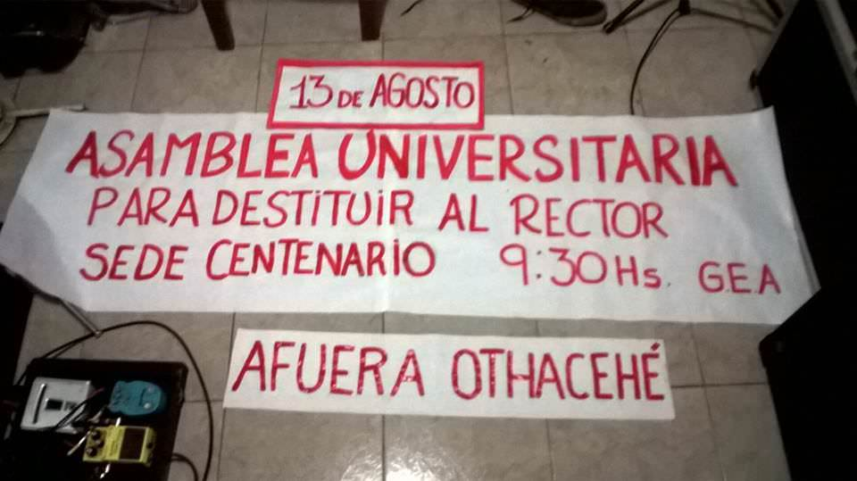
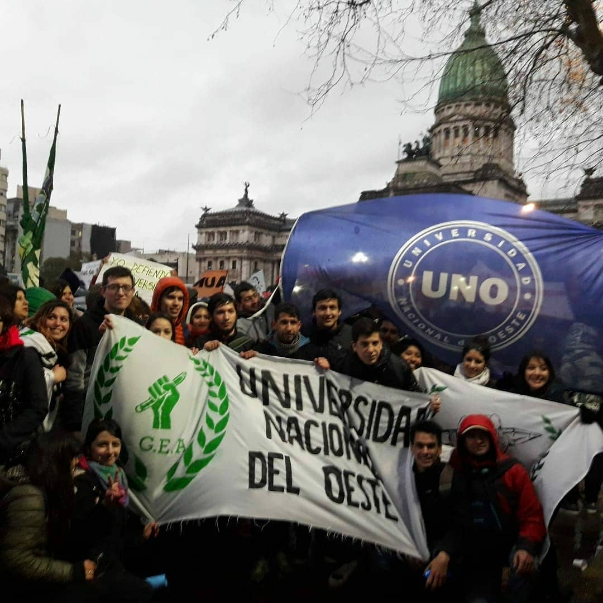
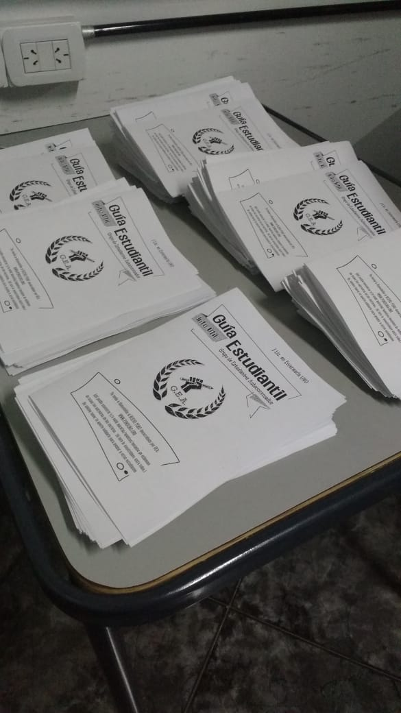
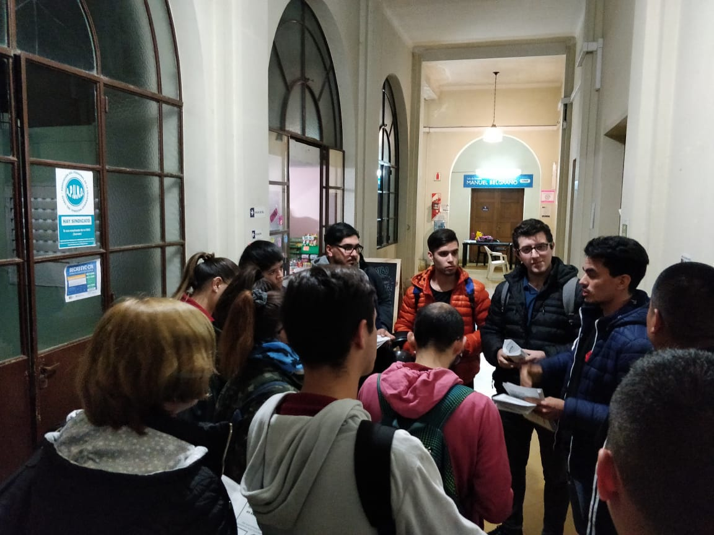
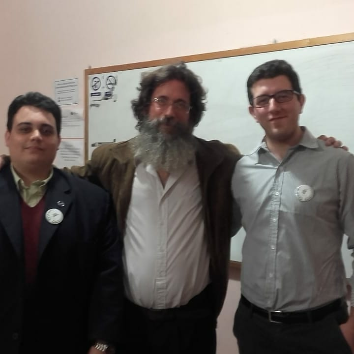
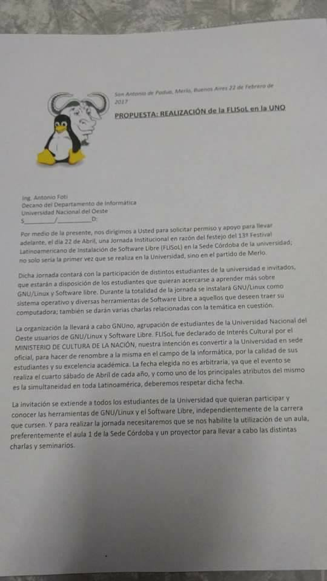
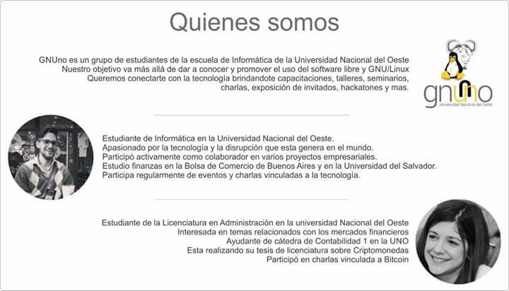
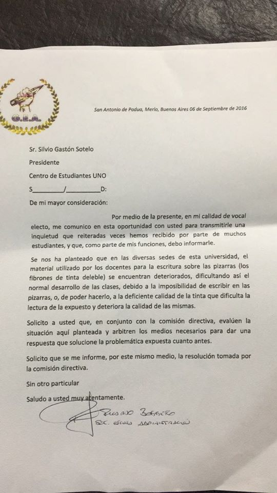
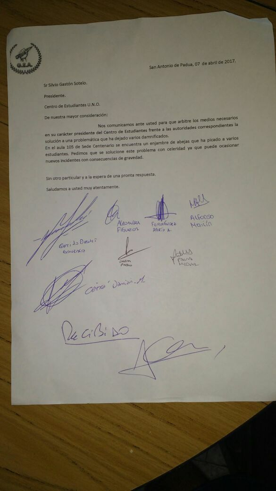
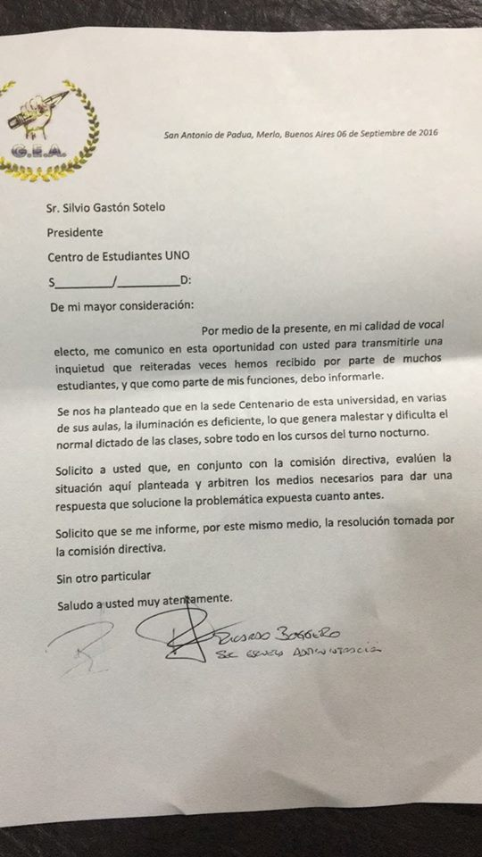

Qué hicimos por los estudiantes
-
Jornada de Donación de Sangre
En 2016 coordinamos y articulamos con la UNO una campaña de donación de sangre para el banco de sangre del Hospital Posadas.
-
Inaguramos el Foro de la UNO
Tenemos el enorme agrado de contarte que ya está disponible el Foro para los estudiantes de la UNO.
Creamos una comunidad con apuntes, resumenes y modelos de parcial de tus materias: Visitá el foro
Este proyecto esta siendo financiado por GEA, la agrupación Nueva UNO cuando se le postulo la idea por un grupo de estudiantes ellos la rechazaron y no mostraron mucho interes en la herramienta.
-
Denuncia del Reglamento Electoral
¡No podias votar!
En 2017 los estudiantes podríamos haber elegido nuestros representantes en los órganos de gobierno, pero no paso.
El Consejo Superior modifico el reglamento electoral y, proscribiendo con reglas arbitrarias la presentación de varias listas, ¡TE PROHIBIERON LA POSIBILIDAD DE DECIDIR!. -
Luchamos con vos
Estuvimos ahí en las dos destituciones de Othacehé, luchando por la U.N.O.
Conseguimos que nos recibieran en el ministerio de Educación para discutir el problema de los títulos.
Acompañamos a los estudiantes de la Escuela de Informática cuando injustamente los trasladaron de sede; Marchamos en defensa de tus derechos y exigimos que quienes te representan cumplan con sus obligaciones  -
Te acompañamos
Diseñamos y repartimos gacetillas con información útil para los compañeros del C.A.A, armamos planes de estudio de todas las carreras para que tengas una forma fácil de hacer el seguimiento de tu carrera, llevamos adelante tutorías libres en materias complejas para darte otra herramienta de estudio, organizamos grupos de estudio presenciales y a distancia.
  -
Hicimos actividades
Una charla por el 24 de Marzo, participamos de la marcha por la noche de los lápices, peleamos una banca en el parlamento joven de Merlo y presentamos un trabajo en la Jornada de Ética de la UNO.
   -
Varios Reclamos
Durante estos años hemos presentado reclamos ante distintas situaciones de conflicto que se han suscitado en los distintos cuatrimestres (Estado de baños, instalaciones, insumos, aulas, horarios de cátedras, etc.).
   -
Fundamos el Centro de Egresados
Nuestros compañeros egresados de G.E.A. fundaron el CEGUNO, donde, además de institucionalizarlo presentándolo ante el Consejo Superior, Decanos, y el Ministerio de Educación de la Nación, firmaron convenios con empresas del sector privado para realizar vinculación laboral de sus representados, y crearon la Primer Bolsa de Trabajo de la U.N.O. .
Una muestra de lo que somos capaces a la hora de gestionar.
www.centrodeegresadosuno.com -
Propuestas para el Centro de Estudiantes
Como primer minoría presentamos proyectos para la reforma del estatuto, la conformación de una comisión revisora de cuentas y una comisión de presupuesto. Estas propuestas perseguían transparentar lo que pasa con TU PLATA en el CENTRO.
TODAS FUERON SISTEMÁTICAMENTE RECHAZADAS, CAJONEADAS o NO IMPLEMENTADAS POR LA AGRUPACIÓN QUE CONDUCE ACTUALMENTE EL C. E. (NUEVA UNO)